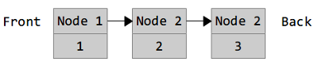

Instead of writing everything from scratch, most real world programming depends on our ability to interface with existing libraries. This chapter will take a look at some of the most commonly used packages included with Go.
First a word of warning: although some of these libraries are fairly obvious (or have been explained in previous chapters), many of the libraries included with Go require specialized domain specific knowledge (for example: cryptography). It is beyond the scope of this book to explain these underlying technologies.
Go includes a large number of functions to work with strings in the strings package:
package main
import (
"fmt"
"strings"
)
func main() {
fmt.Println(
// true
strings.Contains("test", "es"),
// 2
strings.Count("test", "t"),
// true
strings.HasPrefix("test", "te"),
// true
strings.HasSuffix("test", "st"),
// 1
strings.Index("test", "e"),
// "a-b"
strings.Join([]string{"a","b"}, "-"),
// == "aaaaa"
strings.Repeat("a", 5),
// "bbaa"
strings.Replace("aaaa", "a", "b", 2),
// []string{"a","b","c","d","e"}
strings.Split("a-b-c-d-e", "-"),
// "test"
strings.ToLower("TEST"),
// "TEST"
strings.ToUpper("test"),
)
}Sometimes we need to work with strings as binary data. To convert a string to a slice of bytes (and vice-versa) do this:
arr := []byte("test")
str := string([]byte{'t','e','s','t'})Before we look at files we need to understand Go's io package. The io package consists of a few functions, but mostly interfaces used in other packages. The two main interfaces are Reader and Writer. Readers support reading via the Read method. Writers support writing via the Write method. Many functions in Go take Readers or Writers as arguments. For example the io package has a Copy function which copies data from a Reader to a Writer:
func Copy(dst Writer, src Reader) (written int64, err error)
To read or write to a []byte or a string you can use the Buffer struct found in the bytes package:
var buf bytes.Buffer
buf.Write([]byte("test"))A Buffer doesn't have to be initialized and supports both the Reader and Writer interfaces. You can convert it into a []byte by calling buf.Bytes(). If you only need to read from a string you can also use the strings.NewReader function which is more efficient than using a buffer.
To open a file in Go use the Open function from the os package. Here is an example of how to read the contents of a file and display them on the terminal:
package main
import (
"fmt"
"os"
)
func main() {
file, err := os.Open("test.txt")
if err != nil {
// handle the error here
return
}
defer file.Close()
// get the file size
stat, err := file.Stat()
if err != nil {
return
}
// read the file
bs := make([]byte, stat.Size())
_, err = file.Read(bs)
if err != nil {
return
}
str := string(bs)
fmt.Println(str)
}We use defer file.Close() right after opening the file to make sure the file is closed as soon as the function completes. Reading files is very common, so there's a shorter way to do this:
package main
import (
"fmt"
"io/ioutil"
)
func main() {
bs, err := ioutil.ReadFile("test.txt")
if err != nil {
return
}
str := string(bs)
fmt.Println(str)
}Here is how we can create a file:
package main
import (
"os"
)
func main() {
file, err := os.Create("test.txt")
if err != nil {
// handle the error here
return
}
defer file.Close()
file.WriteString("test")
}To get the contents of a directory we use the same os.Open function but give it a directory path instead of a file name. Then we call the Readdir method:
package main
import (
"fmt"
"os"
)
func main() {
dir, err := os.Open(".")
if err != nil {
return
}
defer dir.Close()
fileInfos, err := dir.Readdir(-1)
if err != nil {
return
}
for _, fi := range fileInfos {
fmt.Println(fi.Name())
}
}Often we want to recursively walk a folder (read the folder's contents, all the sub-folders, all the sub-sub-folders, …). To make this easier there's a Walk function provided in the path/filepath package:
package main
import (
"fmt"
"os"
"path/filepath"
)
func main() {
filepath.Walk(".", func(path string, info os.FileInfo, err error) error {
fmt.Println(path)
return nil
})
}The function you pass to Walk is called for every file and folder in the root folder. (in this case .)
Go has a built-in type for errors that we have already seen (the error type). We can create our own errors by using the New function in the errors package:
package main
import "errors"
func main() {
err := errors.New("error message")
}In addition to lists and maps Go has several more collections available underneath the container package. We'll take a look at the container/list package as an example.
The container/list package implements a doubly-linked list. A linked list is a type of data structure that looks like this:
Each node of the list contains a value (1, 2, or 3 in this case) and a pointer to the next node. Since this is a doubly-linked list each node will also have pointers to the previous node. This list could be created by this program:
package main
import ("fmt" ; "container/list")
func main() {
var x list.List
x.PushBack(1)
x.PushBack(2)
x.PushBack(3)
for e := x.Front(); e != nil; e=e.Next() {
fmt.Println(e.Value.(int))
}
}The zero value for a List is an empty list (a *List can also be created using list.New). Values are appended to the list using PushBack. We loop over each item in the list by getting the first element, and following all the links until we reach nil.
The sort package contains functions for sorting arbitrary data. There are several predefined sorting functions (for slices of ints and floats) Here's an example for how to sort your own data:
package main
import ("fmt" ; "sort")
type Person struct {
Name string
Age int
}
type ByName []Person
func (this ByName) Len() int {
return len(this)
}
func (this ByName) Less(i, j int) bool {
return this[i].Name < this[j].Name
}
func (this ByName) Swap(i, j int) {
this[i], this[j] = this[j], this[i]
}
func main() {
kids := []Person{
{"Jill",9},
{"Jack",10},
}
sort.Sort(ByName(kids))
fmt.Println(kids)
}The Sort function in sort takes a sort.Interface and sorts it. The sort.Interface requires 3 methods: Len, Less and Swap. To define our own sort we create a new type (ByName) and make it equivalent to a slice of what we want to sort. We then define the 3 methods.
Sorting our list of people is then as easy as casting the list into our new type. We could also sort by age by doing this:
type ByAge []Person
func (this ByAge) Len() int {
return len(this)
}
func (this ByAge) Less(i, j int) bool {
return this[i].Age < this[j].Age
}
func (this ByAge) Swap(i, j int) {
this[i], this[j] = this[j], this[i]
}A hash function takes a set of data and reduces it to a smaller fixed size. Hashes are frequently used in programming for everything from looking up data to easily detecting changes. Hash functions in Go are broken into two categories: cryptographic and non-cryptographic.
The non-cryptographic hash functions can be found underneath the hash package and include adler32, crc32, crc64 and fnv. Here's an example using crc32:
package main
import (
"fmt"
"hash/crc32"
)
func main() {
h := crc32.NewIEEE()
h.Write([]byte("test"))
v := h.Sum32()
fmt.Println(v)
}The crc32 hash object implements the Writer interface, so we can write bytes to it like any other Writer. Once we've written everything we want we call Sum32() to return a uint32. A common use for crc32 is to compare two files. If the Sum32 value for both files is the same, it's highly likely (though not 100% certain) that the files are the same. If the values are different then the files are definitely not the same:
package main
import (
"fmt"
"hash/crc32"
"io/ioutil"
)
func getHash(filename string) (uint32, error) {
bs, err := ioutil.ReadFile(filename)
if err != nil {
return 0, err
}
h := crc32.NewIEEE()
h.Write(bs)
return h.Sum32(), nil
}
func main() {
h1, err := getHash("test1.txt")
if err != nil {
return
}
h2, err := getHash("test2.txt")
if err != nil {
return
}
fmt.Println(h1, h2, h1 == h2)
}Cryptographic hash functions are similar to their non-cryptographic counterparts, but they have the added property of being hard to reverse. Given the cryptographic hash of a set of data, it's extremely difficult to determine what made the hash. These hashes are often used in security applications.
One common cryptographic hash function is known as SHA-1. Here's how it is used:
package main
import (
"fmt"
"crypto/sha1"
)
func main() {
h := sha1.New()
h.Write([]byte("test"))
bs := h.Sum([]byte{})
fmt.Println(bs)
}This example is very similar to the crc32 one, because both crc32 and sha1 implement the hash.Hash interface. The main difference is that whereas crc32 computes a 32 bit hash, sha1 computes a 160 bit hash. There is no native type to represent a 160 bit number, so we use a slice of 20 bytes instead.
Writing network servers in Go is very easy. We will first take a look at how to create a TCP server:
package main
import (
"encoding/gob"
"fmt"
"net"
)
func server() {
// listen on a port
ln, err := net.Listen("tcp", ":9999")
if err != nil {
fmt.Println(err)
return
}
for {
// accept a connection
c, err := ln.Accept()
if err != nil {
fmt.Println(err)
continue
}
// handle the connection
go handleServerConnection(c)
}
}
func handleServerConnection(c net.Conn) {
// receive the message
var msg string
err := gob.NewDecoder(c).Decode(&msg)
if err != nil {
fmt.Println(err)
} else {
fmt.Println("Received", msg)
}
c.Close()
}
func client() {
// connect to the server
c, err := net.Dial("tcp", "127.0.0.1:9999")
if err != nil {
fmt.Println(err)
return
}
// send the message
msg := "Hello World"
fmt.Println("Sending", msg)
err = gob.NewEncoder(c).Encode(msg)
if err != nil {
fmt.Println(err)
}
c.Close()
}
func main() {
go server()
go client()
var input string
fmt.Scanln(&input)
}This example uses the encoding/gob package which makes it easy to encode Go values so that other Go programs (or the same Go program in this case) can read them. Additional encodings are available in packages underneath encoding (like encoding/json) as well as in 3rd party packages. (for example we could use labix.org/v2/mgo/bson for bson support)
HTTP servers are even easier to setup and use:
package main
import ("net/http" ; "io")
func hello(res http.ResponseWriter, req *http.Request) {
res.Header().Set(
"Content-Type",
"text/html",
)
io.WriteString(
res,
`<doctype html>
<html>
<head>
<title>Hello World</title>
</head>
<body>
Hello World!
</body>
</html>`,
)
}
func main() {
http.HandleFunc("/hello", hello)
http.ListenAndServe(":9000", nil)
}HandleFunc handles a URL route (/hello) by calling the given function. We can also handle static files by using FileServer:
http.Handle(
"/assets/",
http.StripPrefix(
"/assets/",
http.FileServer(http.Dir("assets")),
),
)The net/rpc (remote procedure call) and net/rpc/jsonrpc packages provide an easy way to expose methods so they can be invoked over a network. (rather than just in the program running them)
package main
import (
"fmt"
"net"
"net/rpc"
)
type Server struct {}
func (this *Server) Negate(i int64, reply *int64) error {
*reply = -i
return nil
}
func server() {
rpc.Register(new(Server))
ln, err := net.Listen("tcp", ":9999")
if err != nil {
fmt.Println(err)
return
}
for {
c, err := ln.Accept()
if err != nil {
continue
}
go rpc.ServeConn(c)
}
}
func client() {
c, err := rpc.Dial("tcp", "127.0.0.1:9999")
if err != nil {
fmt.Println(err)
return
}
var result int64
err = c.Call("Server.Negate", int64(999), &result)
if err != nil {
fmt.Println(err)
} else {
fmt.Println("Server.Negate(999) =", result)
}
}
func main() {
go server()
go client()
var input string
fmt.Scanln(&input)
}This program is similar to the TCP example, except now we created an object to hold all the methods we want to expose and we call the Negate method from the client. See the documentation in net/rpc for more details.
When we invoke a command on the terminal it's possible to pass that command arguments. We've seen this with the go command:
go run myfile.go
run and myfile.go are arguments. We can also pass flags to a command:
go run -v myfile.go
The flag package allows us to parse arguments and flags sent to our program. Here's an example program that generates a number between 0 and 6. We can change the max value by sending a flag (-max=100) to the program:
package main
import ("fmt";"flag";"math/rand")
func main() {
// Define flags
maxp := flag.Int("max", 6, "the max value")
// Parse
flag.Parse()
// Generate a number between 0 and max
fmt.Println(rand.Intn(*maxp))
}Any additional non-flag arguments can be retrieved with flag.Args() which returns a []string.
The preferred way to handle concurrency and synchronization in Go is through goroutines and channels as discussed in chapter 10. However Go does provide more traditional multithreading routines in the sync and sync/atomic packages.
A mutex (mutal exclusive lock) locks a section of code to a single thread at a time and is used to protect shared resources from non-atomic operations. Here is an example of a mutex:
package main
import (
"fmt"
"sync"
"time"
)
func main() {
m := new(sync.Mutex)
for i := 0; i < 10; i++ {
go func(i int) {
m.Lock()
fmt.Println(i, "start")
time.Sleep(time.Second)
fmt.Println(i, "end")
m.Unlock()
}(i)
}
var input string
fmt.Scanln(&input)
}When the mutex (m) is locked any other attempt to lock it will block until it is unlocked. Great care should be taken when using mutexes or the synchronization primitives provided in the sync/atomic package.
Traditional multithreaded programming is difficult; it's easy to make mistakes and those mistakes are hard to find, since they may depend on a very specific, relatively rare, and difficult to reproduce set of circumstances. One of Go's biggest strengths is that the concurrency features it provides are much easier to understand and use properly than threads and locks.
| ← Previous | Index | Next → |